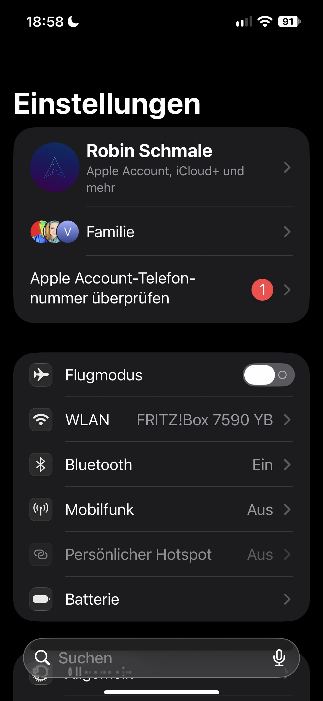
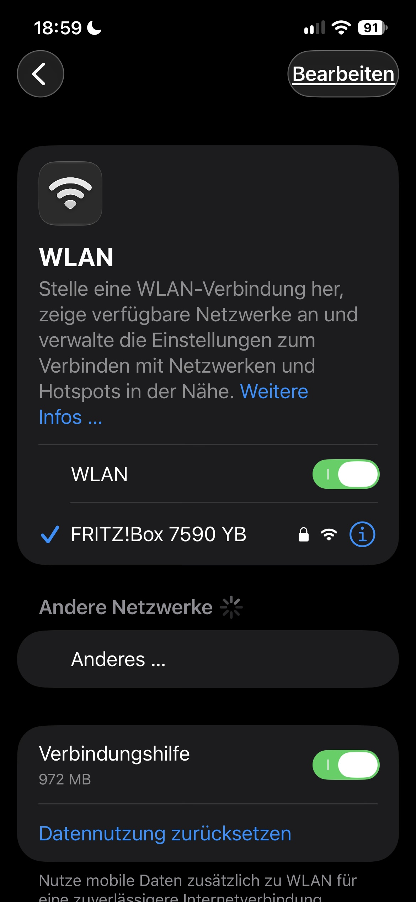
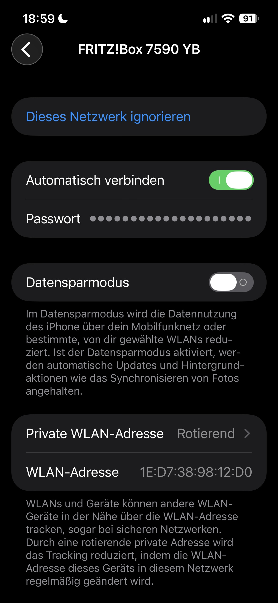
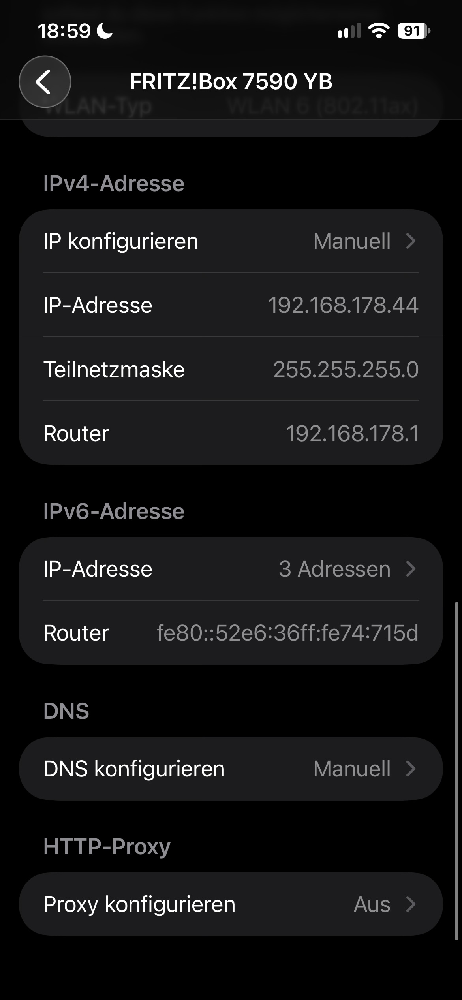
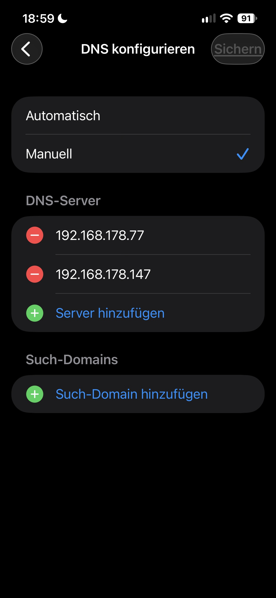

Hier ist ein kurzes Tutorial, wie man den lokalen Webeblocker auf dem Handy installiert.
1. Öffne die Einstellungen auf deinem Handy.

2. Gehe zu "WLAN".

3. Tippe auf das "i" Symbol neben deinem verbundenen WLAN-Netzwerk.

4. Scrolle nach unten und tippe auf "DNS".

5. Wähle "Manuell" und entferne alle einträge.Füge danach die DNS-Serveradressen hinzu:
192.168.178.77
und
192.168.178.147

6. Dein Handy sollte nun den lokalen Werbeblocker verwenden.
Hinweis: Stelle sicher, dass dein Handy mit dem gleichen Netzwerk verbunden ist, auf dem der Werbeblocker läuft.
Wenn du Fragen hast, kontaktiere bitte den Tech-Support.
Gemacht von Robin